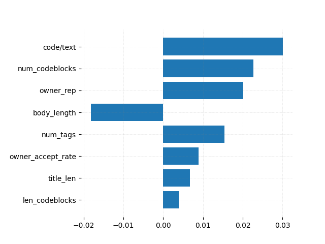

Preliminary Results
Stack Overflow Question Quality
The predictability of question quality depends on our definition of question quality. As a preliminary step, we used logistic regression with 5-fold cross validation to compare our two definitions. With the score definition, we were able to achieve a cross-validation score of 91.1% (8.9% cross-validation classification error). With the answered/not answered definition, we were able to achieve a cross-validation score of 75% (25% cross-validation classification error). Note that in both cases, datapoints with zero score were removed as we determined them to have too low community activity to be identified as good or bad, thus we removed them from our prediction [1]. Positive/negative score appears to be far more predictable than whether the question will end up answered. For this reason, we will not consider “answered” to be a viable definition of a good question from now on, and will only use “positive score”.
Using score, we can analyze the importance of each feature. We computed the Pearson Correlation Coefficient of each feature with score (not positive or negative score, the raw score). This is summarized in the following histogram:

Though none of these features have particularly strong correlation with score, code-to-text ratio has the best, followed by number of codeblocks.
Finally, we performed three classification algorithms on our dataset. The results are summarized in Table 1
| Logistic Regression | SVC | XGBoost |
|---|---|---|
| 91.067% | B | C |